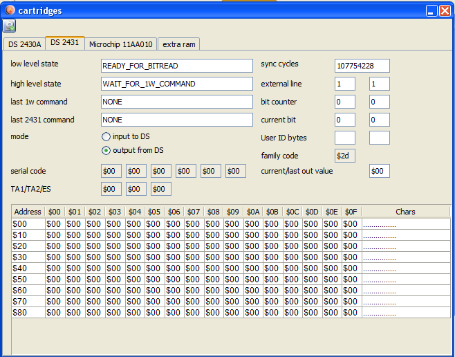

Based on the description and vectrex source code from Alex Herbert and Thomas Sontowski. Emulation is only done in so far, that known cartridges are supported, this is no FULL emulation of a DS2431!
(not emulated e.g. are: overdrive, bank protection)
Known cartridges which use this hardware:
Robot Arena
The Core
Karl Quappe
Release
Statefiles for the eEprom are always saved in the same directory and named as the original cartridge (bin) file, with the additional extension of: ".ds2431.ser".
(the save-format is java serialization)
In general the emulation are two state machines,
one lowlevel "machine" which regulates bit manipulations and waits for timings slots and such.
and one highlevel machine which emulates the commands
The highlevel uses the lowlevel machine and is "called" back from it when it is finished.
Input/output is basically done via the lineIn and lineOut functions. Both functions in itself do not trigger any further actions.
All steps of emulation are "triggered" from the "step" function. The step function should be called EVERY emulated cycle.
The step function is basically the lowLevel statemachine, which on occassion triggers the highlevel.
You can view current emulation status by opening a "cartridge" window (in dissi type "carti").

emulation view
The datasheet of the chip can be found in the subdirectory:
documents/hardware/eEprom/DS2431.pdf